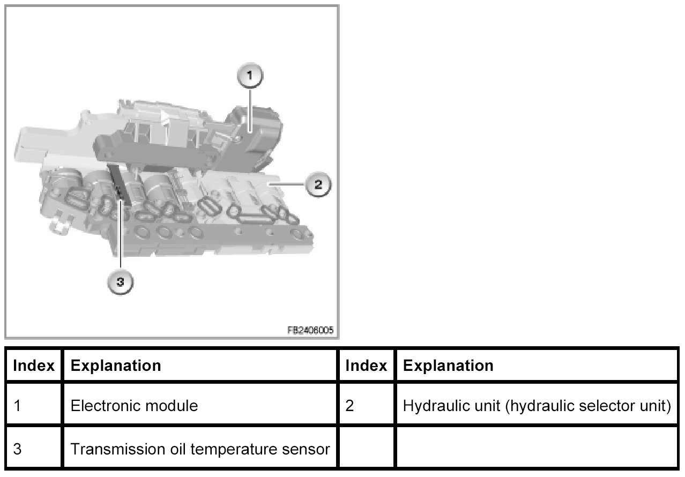

Transmission Oil Temperature Sensor
Transmission Oil Temperature Sensor
For optimal shift characteristics, the EGS control module requires the input signal from the transmission temperature sensor. At very low transmission oil temperatures, the shifting forces to be applied are high; at operating temperature, they are correspondingly low. The transmission temperature sensor is installed in the mechatronics module. Activation of the converter lockup clutch, among other things, is controlled according to the transmission oil temperature.
Brief description of components
The transmission temperature sensor is a thermistor where the output value changes according to the transmission oil temperature. The sensor has negative temperature coefficient. With rising temperature, the resistance falls and with falling temperature the resistance increases. The EGS control module sends a reference signal to the sensor and measures the voltage drop in the circuit. At low transmission oil temperature, the sensor resistance is high and the EGS control module picks up a high signal voltage. When the transmission oil temperature rises, the resistance becomes lower and the signal voltage drops.

System functions
The following system function is described:
Closing the converter lockup clutch
Below the following transmission oil temperature, the converter lockup clutch is not regulated or closed.
- N51 engine: 7 °C
- N45, N46, N52 engines: 17 °C
Opening the thermostat in the transmission oil cooler
The automatic transmission oil is cooled in the cooling circuit. A thermostat is installed in the transmission oil cooler. The thermostat is opened or closed on a temperature-dependent basis.
- E81, E87, E90, E91, E92, E93
The thermostat regulates coolant volume that flows through the transmission oil cooler depending on the transmission oil temperature.
The thermostat opens above a transmission oil temperature of 92 °C
- E83
The thermostat regulates coolant volume that flows through the transmission oil cooler depending on the coolant temperature.
The thermostat opens above a coolant temperature of 75 °C
Notes for Service department
General information
The transmission temperature sensor can not be replaced separately.
Diagnosis instructions
Relevant faults for the sensor system
The following faults are treated in the test module:
- 5781 transmission temperature sensor: implausible
5782 transmission temperature sensor: value too low
5783 transmission temperature sensor: value too high
5785 internal temperature sensor: Power output
5786 internal temperature sensor: value too low
5787 internal temperature sensor: value too high
5788 hot cutout
578A increased transmission temperature
578B transmission temperature sensor: plausibility
578C internal temperature sensor: plausibility
578D internal temperature sensor: plausibility
5780 excess temperature gear oil
The internal temperature sensor is integrated in the EGS control module.
No liability can be accepted for printing or other faults. Subject to changes of a technical nature